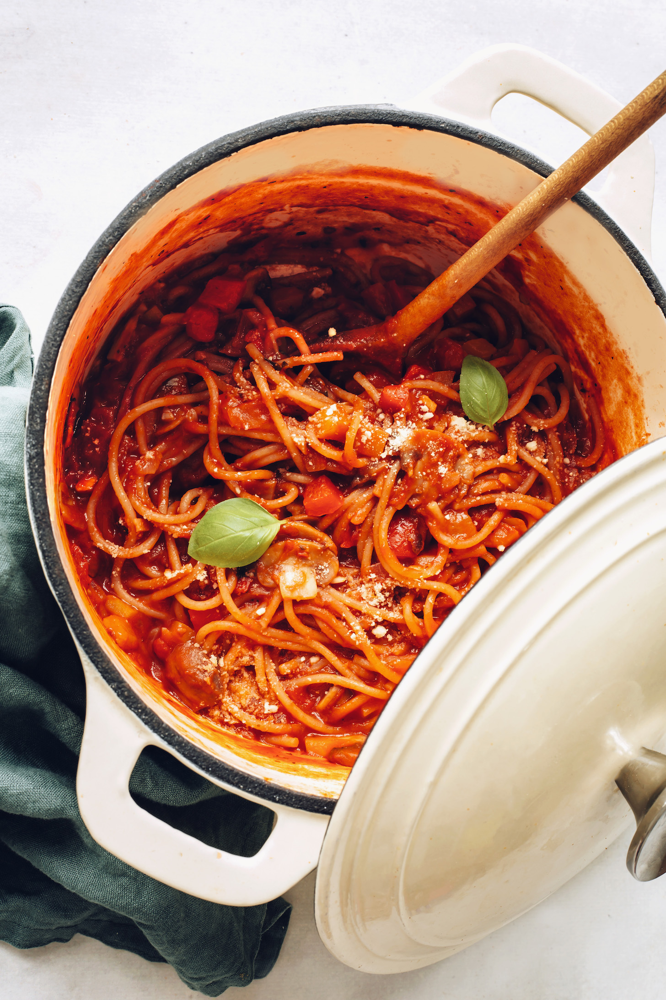

One-Pot Spaghetti

Description
Want spaghetti but don’t have the energy to boil water, drain pasta, and
make a from-scratch sauce? Us either!
Try our simplified take on spaghetti made in 1 pot with plenty of veggies,
perfectly al dente spaghetti noodles, and hearty marinara sauce. Top with
vegan parmesan cheese and fresh basil for the ultimate 30-minute weeknight
meal! Perfect for making ahead and enjoying throughout the week. Let us
show you how it’s done!
Ingredients
-
1 Tbsp olive oil (if oil-free, sub broth or water and add more as needed
to prevent sticking)
- 1 cup diced onion
- 3 cloves garlic, minced
-
2 ½ cups cremini mushrooms, thinly sliced (or sub white button mushrooms
// ~8 ounces as original recipe is written)
- 1 medium yellow or red bell pepper, diced
-
1/2 tsp sea salt (plus more to taste — keep in mind that your marinara
will be salted)
- 1 tsp dried oregano (or Italian seasoning blend)
-
1/4 tsp crushed red pepper flakes (reduce for less heat // increase for
more heat)
-
2 (24-oz.) jars favorite marinara (we like Rao’s and Organico Bello
brands)
- 1 ½ cups water
-
12 oz. dry gluten-free spaghetti (we like Jovial brand or Barillo // sub
any pasta shape you like here)
- 1 big handful spinach or other green of choice (optional)
Steps
-
Heat a large pot (with a lid) over medium heat. Once hot, add the oil
and wait 30 seconds. Then add the onion and sauté 4-5 minutes or until
lightly browned and translucent, stirring occasionally. Turn down heat
as needed if browning too quickly.
-
Add garlic, mushrooms, bell pepper, and salt and stir. Sauté, stirring
frequently, until softened and slightly caramelized ~5-7 minutes.
-
Add the oregano and red pepper flakes and stir until fragrant, about 1
minute.
-
Add the marinara and water and bring to a simmer. Break the pasta in
half (disregard if using a smaller pasta shape) and add to the pot. Stir
to break up any clumps.
-
Add optional greens at this time if desired. Then cover the pot, reduce
heat to low, and simmer for 13 minutes, stirring twice.
-
Turn off the heat and let the pot stand, covered, for 2 minutes. Stir
again to break up any remaining clumps of pasta (clumping should be
minimal at this point). Uncover, taste, and adjust the seasonings as
needed with more salt for overall flavor, oregano for herbal flavor, or
red pepper flakes for heat.
-
Serve with fresh basil and vegan parmesan on top (optional). Store
cooled leftovers in the refrigerator up to 2-3 days and reheat in the
microwave or on the stovetop until hot, adding more water as needed to
thin. Not freezer friendly.